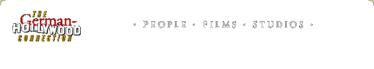

- german -
|
Welcome to Export Union des Deutschen Films German-Cinema. . German Cinema - Export-Union des Deutschen Films - German Cinema Inc. Welcome to Export-Union des Deutschen Films Welcome to German-Cinema Inc. The Export-Union des Deutschen Films (ExU) is the official trade association for the promotion of the export of German films. |
|
. Admission is free with the purchase of a ticket for B-52 which will be screened after the lecture. WERNER DUTSCH is a producer who has as his base the German broadcaster WDR III in Cologne. He has supported documentaries of the highest quality for many years, especially those of an innovative character. For example, he has been involved in various films of Harun Farocki and Hartmut Bitomsky, two german directors featured in the festival this year. |
|
Reel Classics Ed Stephan's Tarzan of the Internet . . The German-Hollywood Connection People Fred Astaire Michael Curtiz Elfi von Dassanowsky Leonardo DiCaprio Marlene Dietrich Roland Emmerich H. Giger Brigitte Helm Hedy Lamarr Fritz Lang Peter Lorre Wolfgang Petersen Franka Potente Leni Riefenstahl Conrad Veidt Veidt in Casablanca Johnny Weissmuller Wim Wenders Billy Wilder William Wyler Hans Zimmer . aged 95 Leni Riefenstahl's 100th Birthday Tarzan in Acapulco Why is Johnny Weissmuller's grave in Mexico. |
She received a Recognition for Outstanding Service and Dedication to UF students from the Division of Student Affairs in 1994 and a TIP award from CLAS in 1996. Teaching Assistants Sarah Baumann Marije Beertema Jennifer Coenen Margit Grieb Craig Herr Anja Hoffmann Jolyon Hughes Theodore Jones John Paul Kucinski Aneka Meier S. Alter is Associate Professor of German, Film and Media Studies. She is currently working on a book-length manuscript on the international essay film as well as co-editing a volume, Sound Matters, with Lutz Koepnick back E. The Quantum Mind and Time Travel in Science and in Literary Myth.
|  |
A good german site: http://www.ticketslive.com/dev1/owa/pvlabel.perf_list?organ_val=3322&venue_val=0&event_val=32322&pvlbl=1&country=98&lang=4